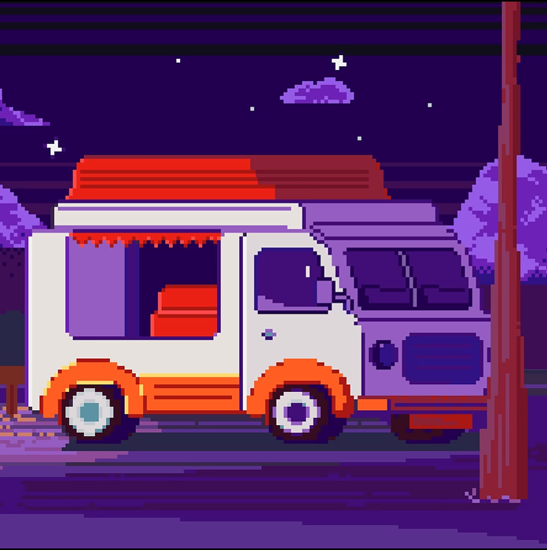

-
Фритрек и нулевой спринт: Подготовка к работе
</HTML> Это было самое начало пути. На этом этапе важно было проникнуться основами и настроиться на учёбу. И, возможно, подумать, как новые знания могут повлиять на ваше будущее.
Было много воодушевления и надежды. Одновременно со страхом не справиться и сомнениями дл меня ли это вообще.
-
1 спринт: Я — чистый лист
</HTML>На первых этапах мы работали со страхами и сомнениями, которые часто испытывают новички. Один из них — страх перед чистым листом. Это, конечно же, намного сложнее, чем боязнь куска бумаги. Часто за этим ощущением скрываются более глубокие вопросы: с чего начать? а вдруг будет слишком сложно? что, если я не справлюсь?
Сначала было не понятно,что обучение очень скоростное, расслабляться и проходить его на чилле точно не получится.
-
1 спринт: А если не получится?
</HTML>Первый проект — позади! Но это всё ещё самое начало пути. Радость могла быстро померкнуть и смениться ожиданием провала. Или вы, наоборот, могли вдохновиться успехами и поверить в себя.
Первая проектная была довольно простая, но был не очень понятен процесс её сдачи (привет,прогульщикам велком-встреч). Поэтому сдала её только в 3 попытки.
-
2 спринт: Погоня за идеалом
</HTML>На этом этапе вы уже достаточно разбирались в основах вёрстки, чтобы понять, как много ещё впереди. Вы могли попытаться погнаться за идеалом и понять, что он недостижим. А, может, вы вовсе и не подвержены перфекционизму и вместо того, чтобы сделать идеально, старались просто сделать.
Понемногу я поняла, что с обучением не всё так просто и оно действительно требует много времени каждый день (ну или хотя бы через день).
-
2 спринт: О тех, кто рядом
</HTML>Всё это время вы были не одиноки (хотя, возможно, иногда и чувствовали, что одни против целого мира). Вас окружали одногруппники, команда сопровождения и просто близкие люди, которым можно пожаловаться, если очередной макет просто так не поддавался. Осваивать что-то новое легче, когда рядом есть единомышленники, не правда ли?
Вторая проектная - уан лав (спасибо за готовый html)! Получилось сдать со второй попытки с минимальными правками! Горжусь собой! Всему коллективу практикума спасибо!
-
3 спринт: Обходные стратегии
</HTML>На этом курсе вы постоянно решали разные задачи. В какой-то момент вам могло показаться, что решения просто иссякли. Значит, пришло время посмотреть на задачу под другим углом.
Было очень мало времени на учёбу. Пыталась планировать, но начала отставать. Наступила осень, энергии стало меньше и настроение чуть подупало.
-
3 спринт: Когда опускаются руки
</HTML>Во время учёбы часто возникает чувство, когда не знаешь, за что хвататься. Вроде и проектную пора сдавать, и задачи хочется порешать, и в теории получше разобраться, и жизнь не забыть пожить. В такие моменты очень нужна концентрация. Вспомните, откуда вы её черпали.
Третья проектная - самая сложная для меня. Очень-очень много времени на неё ушло. Из-за этого на четвёртый спринт и последнюю проектную по вёрстке его почти не осталось.
-
«Сейчас я здесь»
</HTML>Сейчас вы уже очень много знаете о вёрстке. Но это только начало. Во-первых, впереди ещё много материала про «красотищу». Во-вторых, с окончанием курса учёба не заканчивается. Вёрстка — это целый мир. И этот мир постоянно меняется. Познать его полностью не получится, но это тот случай, когда важен сам процесс познания. Ведь часто путь — и есть результат.
Чувствую себя уверено, практическую сделала быстрее, чем ожидала. Надеюсь, что правок будет немного и можно будет уже наконец-то перейти к JavaScript!